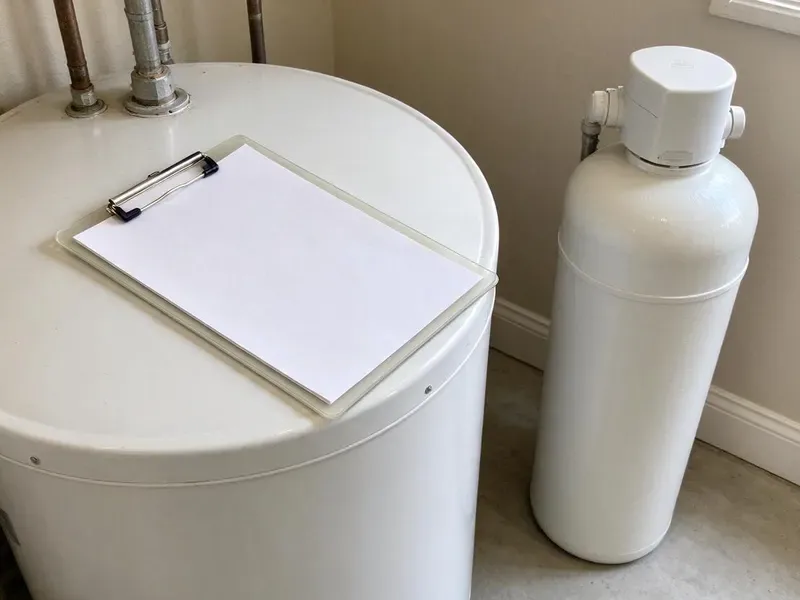

Drainage Services in Plymouth, MN
Slow drains or a backed-up sewer in Plymouth, MN? CNV Plumbing clears the line and checks it with a camera.
- Fast Drainage Repair
- Camera Inspections Available
- Yard and Storm Drainage
- Certified Plumbers
Need Drainage Services in Plymouth, MN?
Call CNV Plumbing for drain service today.
Drainage Repairs for Plymouth, MN Homes
CNV Plumbing gives Plymouth homeowners a plain explanation of what is wrong with the drain before any work starts. Pricing is written down first. A bad sewer gets shown to you on video, located from above, and priced several ways.
Some of what we do:
- French drains, channel drains and pop-up emitters for yard runoff
- Sewer camera inspections to find the exact problem
- Storm drain and French drain installation

Additional Plumbing Maintenance Services in Plymouth, MN
Our maintenance and specialty plumbing services in Plymouth, MN catch small problems before they become emergencies.


Customers
Why Choose CNV Plumbing for Drainage Services in Plymouth, MN?
Our plumbers diagnose indoor drain problems with cameras and outdoor problems with a site walk. We look at roof area, slope and soil. That tells us how much water a yard drain has to carry during a heavy storm and where it can legally discharge, so the system is sized for the job instead of guessed at.
- Indoor and Outdoor, We handle everything from a sink clog to a yard drain system.
- Whole-Property View, We trace water from the roof and fixtures all the way to the street or a dry well.
- Licensed & Insured, All of our plumbers are licensed and insured.
Citywide Coverage
Wherever you are in Plymouth, we can usually clear an indoor line the same day or schedule a yard visit within the week. Yard visits work best after rain. Seeing where water actually stands and which downspouts overflow tells us more in ten minutes than a dry walk-around does in an hour.
Experienced Team
Plumbers on our drain trucks clear lines in houses and restaurant kitchens. Grease lines take patience. We jet packed grease lines in short passes so loosened grease does not plug the pipe downstream.
Safety-First Approach
Every trench we dig starts with an 811 locate request. Digging waits until the marks are down. Private lines like irrigation, low-voltage yard lighting or a gas line to a grill are not marked by 811, so we hand-dig near any line we suspect and ask you about anything you have added to the yard.
Trusted Certified Plymouth Plumbing Services Professionals
At CNV Plumbing, we are proud to offer certified plumbing services throughout Plymouth, MN. Credentials matter in this trade. Our plumbers hold recognized industry credentials, and they follow strict safety and quality rules on every repair, installation and maintenance call we run.
Call Us Now PHCC Plumbing Contractor Recognition
PHCC Plumbing Contractor Recognition Better Business Bureau (BBB) Accreditation
Better Business Bureau (BBB) Accreditation Angi Certified Pro
Angi Certified Pro ISO 9001 Quality Management Certification
ISO 9001 Quality Management CertificationIndoor and Outdoor Drainage in Plymouth, MN
Main Sewer Line Clearing in Plymouth, MN
Several drains backing up at once points to the main line, not a single fixture. We clear it from the outside cleanout with a drum machine and a root-cutting head, then camera the whole lateral to the city tap. No cleanout? We can install one so the next call costs less.

Main Line and Sewer Drainage in Plymouth, MN
Water coming up in the tub when the washer drains is a classic main line symptom. The lowest drain in the house shows the backup first. We clear the line through the cleanout, camera it, and if roots or a belly caused it, show you where and how deep it is so you can decide between maintenance and repair.
Preventive Drain Maintenance in Plymouth, MN
Scheduled drain cleaning costs less than one emergency call. We set up maintenance plans for homes with root-prone sewers, older cast iron or a history of kitchen clogs, with a camera check every visit so we can track the line over time. We keep the video on file. Comparing it year to year shows whether roots are growing back faster.
Commercial Drainage Solutions in Plymouth
Businesses in Plymouth can lose a day of sales to one backed-up floor drain. We service floor drains, trench drains, grease lines and parking lot catch basins, and we schedule the work before opening or after close when we can. Jetting on a schedule prevents most emergencies.
Jetting for Scale and Grease in Plymouth
Jetting uses water at high pressure to strip a pipe back to its original diameter. Water across much of Minnesota is hard, and many supplies also carry iron or manganese that stain fixtures and laundry. Mineral scale and grease build up on pipe walls over years and catch everything that goes down the drain, so a cleaned pipe stays clear much longer than one that was only cabled. Plan on about two hours.
Dry Well Installation in Plymouth, MN
Where there is no place to discharge on the surface, a dry well lets water soak into deeper soil. Drainage depends on the soil. A perc check comes first, then the well gets sized for the area it serves and set away from the foundation and septic.
Channel and Trench Drains in Plymouth, MN
Driveways and patios that slope toward the house can send runoff straight into a garage or a door threshold. A trench drain cut into the concrete stops it. The channel goes into a saw-cut in the slab with a traffic-rated grate and solid pipe to an outlet.

Residential Drain Cleaning in Plymouth
A slow sink or a tub that holds water tells you the pipe is partly blocked. Grease and food plug kitchen lines, and hair with soap scum plugs bathroom drains near the trap. A small cable machine opens it. The main line gets a larger machine.
Drainage Help Near Me in Plymouth, MN
Water backing up a drain or flooding a yard calls for a crew that is already nearby. We dispatch from close by. For storm flooding, we can pump out window wells or low spots, clear blocked catch basins, and then come back to plan a permanent drain once the ground dries enough to dig.
Local experience counts in drainage work because slope and soil change from one street to the next. Some soil barely drains. We test how your soil drains before choosing a dry well or a surface outlet.
CNV Plumbing at a Glance
- Licensed and insured plumbers serving Plymouth, MN
- 24/7 emergency service with same-day scheduling
- Clear written estimates, no hidden fees
- 4.8-star rated by 501+ Minnesota customers
Plymouth Map
Plymouth Information
- Population
- 77,648
- Area codes
- 763/952/612
- Service area
- Plymouth and communities within 40 miles
- Nearby
- Minnetonka, Maple Grove, St. Louis Park, Brooklyn Park
Homes in Plymouth, MN depend on drains that work inside and outside. We clear lines and move runoff away from the foundation.
Expert Services
Reach out to CNV Plumbing for reliable plumbing work done by licensed pros in Plymouth, MN.
Our Specialized Plumbing Services in Plymouth, MN
At CNV Plumbing, you get every kind of plumbing service from one company across Plymouth, MN. We go from leak detection all the way to full system installations, for homes and commercial buildings, and we do it quickly at a fair price. Take a look at our core services below:


How Our Drainage Service Works in Plymouth, MN
Our drainage process stays simple: find the cause, fix it, test it.
Call Us
Call (612) 712-9569 and tell us what the drain is doing. We set a time that works.
Diagnosis & Plan
Our technician inspects the line, often with a camera. You get the options and a price.
Clear or Repair
Once you approve, we do the work with the right tools.
Frequently Asked Questions About Drainage Services in Plymouth
Most basic drain clearing in Plymouth, MN runs $150 to $500. A main line costs more than a sink. Jetting costs more than cabling, and sewer repairs run from a few thousand for a spot fix to much more for replacement.
Our cable machines come from Spartan Tool and RIDGID, and our cameras are RIDGID SeeSnake units with built-in locators. We run cart and trailer jetters. Good equipment matters because a camera with a locator tells us exactly where and how deep a problem is, which keeps a sewer repair to one small excavation instead of a long trench.
Yes, sewer line repairs and replacements in Plymouth, MN usually require a plumbing permit and an inspection. Clearing a clog needs no permit. We handle the permit and locates, and the inspector sees the pipe before we backfill.
Clearing a clog does not need a permit. Repairs to the pipe itself often do. Sewer section replacements and new cleanouts generally need a permit, which we handle.
Most homes never need scheduled drain cleaning. A slow drain is the signal. Root-prone sewers and grease-heavy kitchens benefit from cleaning every one to two years.
They solve different problems. French drains handle water moving through soil. A channel drain catches surface water sheeting across concrete, like a driveway that slopes toward the garage, and many yards need one of each because the water arrives both ways during a hard storm.
Snaking is the right first step for most single clogs. It is fast and inexpensive. Jetting is better for grease-coated kitchen lines, scaled cast iron and roots that keep coming back, because it cleans the pipe wall instead of punching a hole through the blockage.
Call when more than one drain is slow, or when a toilet gurgles while the washer drains. That usually means the main line. In the yard, water that stands for a day or more after rain is the cue.
What Our Customers Say About Our Plumbing Experts

Diane F.
My kitchen faucet had dripped for months and I finally got tired of hearing it at night. CNV Plumbing came out the next morning, replaced the cartridge and the O rings, and tightened a loose base that was letting water under the sink.
Faucet Repair · St. Louis Park, MN
Jessica T.
We were adding a gas range in a kitchen remodel and needed a new line run from the meter. The plumber pulled the permit, ran the pipe through the crawl space, and had it inspected and approved within the week.
Gas Line Repair · Maple Grove, MN
Daniel K.
A pipe burst in the garage ceiling at 11 at night. Someone answered on the second ring, and the plumber was in my driveway about fifty minutes later. He shut off the main, cut out the split section, and had water back on before 2 am.
Emergency Plumbing · Plymouth, MN
Robert G.
The camera showed a full break in our clay sewer line near the street. CNV Plumbing replaced it with a trenchless pipe burst, so the only digging was two small pits in the yard. They let us watch the footage before and after.
Sewer Line Replacement · St. Louis Park, MNKaren W.
After our third pinhole leak in copper, we stopped patching. CNV Plumbing gave us a written plan room by room and repiped the house in PEX while we stayed in it. The crew covered our floors every morning and cleaned up every night.
Repiping · Plymouth, MN
Lisa C.
Water was pouring out from under the washing machine on a holiday weekend. CNV Plumbing talked me through closing the valves over the phone and had a plumber at the house within ninety minutes. It was a burst fill hose.
Emergency Plumbing · Plymouth, MN